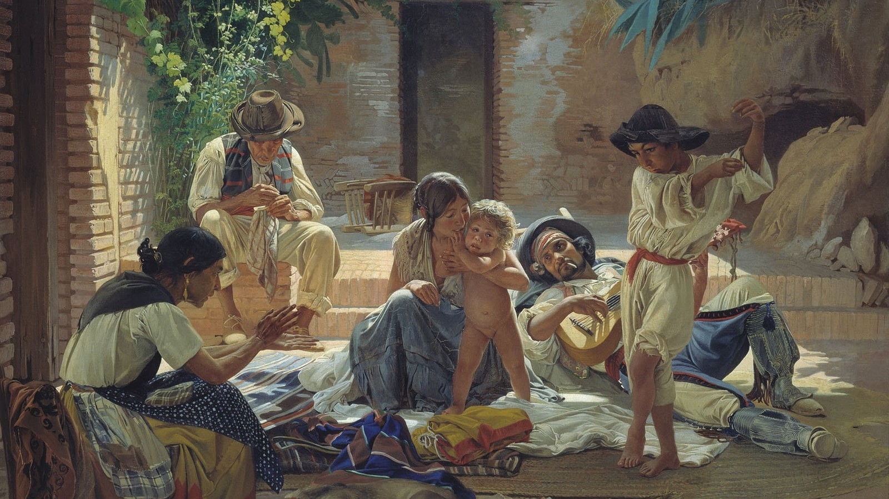

Introduction
From ink-showered paintings to figurative prose and butter-smooth melodies to action-packed movies, Romanis have come to be represented in almost all art forms we know of today.
They are also known as “gypsies”, a word many of us might be more familiar with than Roma or Romani (No, it is not the same as Romania).It is not uncommon to come across the term “gypsy” through a novel or TV show. Many of us might have even come across instances where it has been used. But did you know that this seeming slang word that one might assume originates from the rise of the internet age like “sus”, “ghosted” or “stan” is actually a word with centuries of history? Spoiler alert, it’s not the happy history (as is the case with so much of our history).
“Gypsies” is a term that refers to an ethnic group of people who travelled from Northern India northwestwards and live in various parts of Europe. This group of people, traditionally itinerant, have been known to be constant travellers. Given the nature of their lifestyle, the group is shrouded with the reputation of being exotic, mysterious and dangerous. It is not difficult to imagine what this must have meant for the Roma history in Europe. Bingo! There is a long history of persecution, discrimination and detestment that has followed the Roma community. (Not surprising given that it’s Europe)However, we will not get into the dark stuff. What we will look at is what this meant in terms of the artistic portrayal of the Roma community. Throughout this blog, we will take you on a journey of various art pieces and walk you through the representation of Romani people in them.
So sit tight fam! We promise you a roller coaster ride.